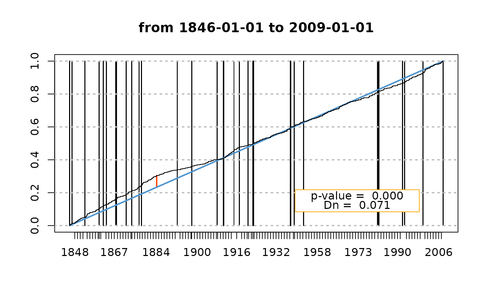
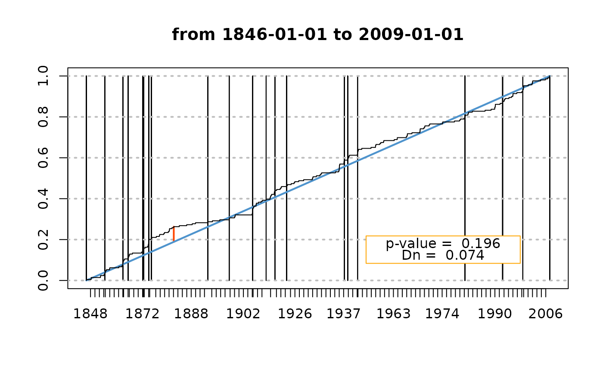

Negative Binomial Levy process
NBlevy.RdNegative Binomial Lévy process estimation from partial observations (counts)
Arguments
- N
-
Vector of counts, one count by time period.
- gamma
-
The
gammaparameter if known (NOT IMPLEMENTED YET). - prob
-
The
probparameter if known (NOT IMPLEMENTED YET). - w
-
Vector of time length (durations).
- sum.w
-
NOT IMPLEMENTED YET. The effective duration. If
sum.wis strictly inferior tosum(w), it is to be understood that missing periods occur within the counts period. This can be taken into account with a suitable algorithm (Expectation Maximisation, etc.) - interval
-
Interval giving min and max values for
gamma. - optim
-
If
TRUEa one-dimensional optimisation is used. Else the zero of the derivative of the (concentrated) log-likelihood is searched for. - plot
-
Should a plot be drawn? May be removed in the future.
- ...
Arguments passed to
plot.
Details
The vector \(\mathbf{N}\) contains counts for events occurring on
non-overlapping time periods with lengths given in
\(\mathbf{w}\). Under the NB Lévy process
assumptions, the observed counts (i.e. elements of
\(\mathbf{N}\)) are independent random variables, each following
a negative binomial distribution. The size parameter \(r_k\)
for \(N_k\) is \(r_k = \gamma w_k\) and
the probability parameter \(p\) is prob. The vector
\(\boldsymbol{\mu}\) of the expected counts has elements
$$\mu_k=\mathrm{E}(N_k)=\frac{1-p}{p} \,\gamma \,w_k.$$
The parameters \(\gamma\) and \(p \:(\code{prob})\)
are estimated by Maximum Likelihood using the likelihood concentrated
with respect to the prob parameter.
Value
A list with the results
- estimate
-
Parameter estimates.
- sd
-
Standard deviation for the estimate.
- score
-
Score vector at the estimated parameter vector.
- info
-
Observed information matrix.
- cov
-
Covariance matrix (approx.).
References
Kozubowski T.J. and Podgórsky K. (2009) "Distributional properties of the negative binomial Lévy process". Probability and Mathematical Statistics 29, pp. 43-71. Lund University Publications.
Note
The Negative Binomial Lévy process is an alternative to
the Homogeneous Poisson Process when counts are subject to
overdispersion. In the NB process, all counts share the same index of
dispersion (variance/expectation ratio), namely 1/prob. When
prob is close to 1, the counts are nearly Poisson-distributed.
See also
NegBinomial for the negative binomial distribution,
glm.nb from the MASS package for fitting Generalised
Linear Model of the negative binomial family.
Examples
## known parameters
nint <- 100
gam <- 6; prob <- 0.20
## draw random w, then the counts N
w <- rgamma(nint, shape = 3, scale = 1/5)
N <- rnbinom(nint, size = w * gam, prob = prob)
mu <- w * gam * (1 - prob) / prob
Res <- NBlevy(N = N, w = w)
## Use example data 'Brest'
## compute the number of event and duration of the non-skipped periods
gof1 <- gof.date(date = Brest$OTdata$date,
skip = Brest$OTmissing,
start = Brest$OTinfo$start,
end = Brest$OTinfo$end,
plot.type = "omit")

ns1 <- gof1$noskip
## fit the NBlevy
fit1 <- NBlevy(N = ns1$nevt, w = ns1$duration)
## use a higher threshold
OT2 <- subset(Brest$OTdata, Surge > 50)
gof2 <- gof.date(date = OT2$date,
skip = Brest$OTmissing,
start = Brest$OTinfo$start,
end = Brest$OTinfo$end,
plot.type = "omit")

ns2 <- gof2$noskip
## the NBlevy prob is now closer to 1
fit2 <- NBlevy(N = ns2$nevt, w = ns2$duration)
c(fit1$prob, fit2$prob)
#> [1] 0.3203404 0.5162115